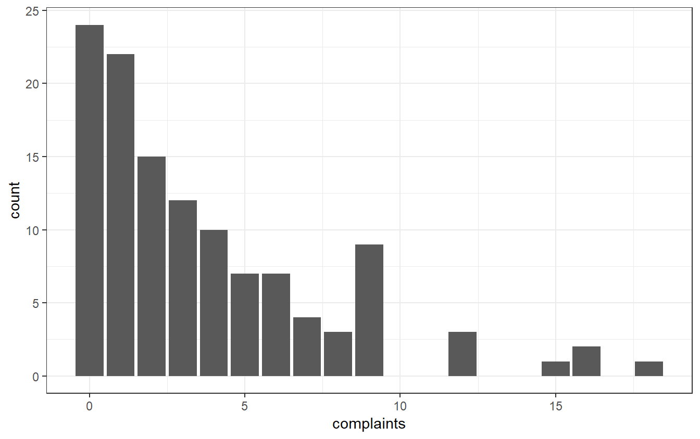
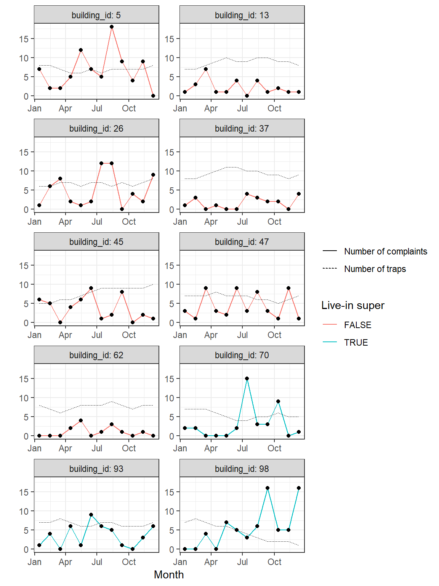
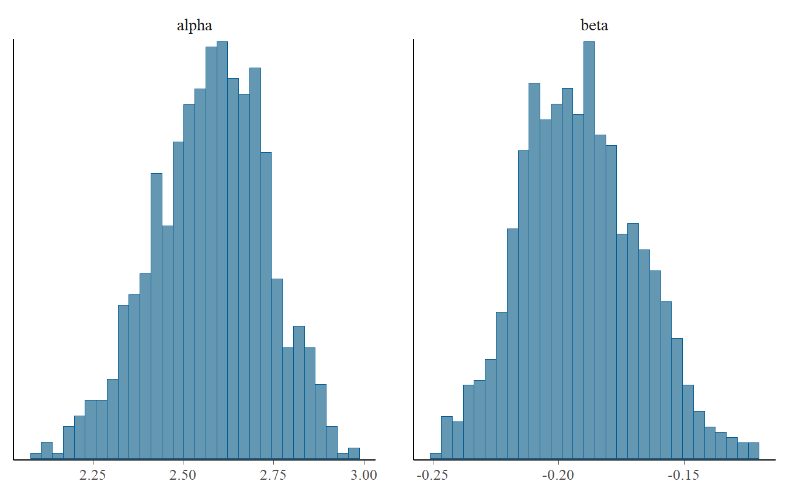
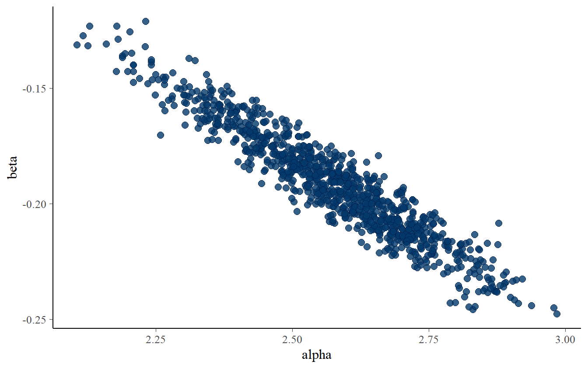

Day 1 Foundations of Bayesian inference in theory and practice and Stan software
1.1 What is Stan?
Open source probabilistic programming language
- How does Stan work?
- declare data and the parameters of the model who you want to fit to the phenomenon under study
- define a posterior distribution for the parameters or a penalized likelihood
1.2 Bayesian workflow
Bayesian data analysis workflow follows the following steps:
Exploratory data analysis: look at the data to understand the variation of the phenomenon and to think about what model should fit the data
Prior predictive checking: simulate fake data that look like real data drawing values of the parameters from the prior predictive distribution and fit the model to the fake data
- Check implications of the fitted model and how different prior distributions impact inference
- Understand the fitted model (if it makes sense in our particular domain)
Fit the model to the data
Diagnostics the algorithm: check if the algorithm used to sample from the posterior distribution showed some pathological behaviours that affected the sampling and thus the final inference
- Posterior predictive checking
- Simulate from the fitted model outcome values and evaluate them with observed data. Does the model fit well the data?
Compare different fitted models to understand which model best represents your data (for example using cross-validation)
1.3 World concentration ofo PM2.5: case study
Goal: estimate global PM2.5 concentration for different regions of the world
Problem: most of the data come from noisy satellite measurements (ground monitor provides sparse, heterogeneous coverage)
1.3.1 Exploratory Data Analysis: building a network of model
- How to define regions where concentrations may vary?
- WHO Regions
- Regions defined by clustering of the concentration levels
- It is possible to start visualizing and fiting different linear models for different regions identified by the clusters to understand how PM2.5 concentrations vary for different satellite measurements and if the variation is different across regions.
- For some regions there’s a lot of variation and low number of measurements.
- Inference from the region with noisy data may be unreliable if the region is considered completely separated from the others.
- Partial Pooling: bring information from different groups ( group with more information) to inform about the concentration of other regions (the ones with noisy data).
- Don’t treat the regions as completely different or as they are the same.
Model 1: simple linear regression assuming all regions are equal
Outcome: log(PM2.5)
Covariate: satellite measurements (sat)
Measurements: \(n = 1, ..., N\)
Regions: \(j = 1, ..., J\)
- Model 2:
- Priors on region-levels parameters:
- We impose probability distribution on the region-level paramters, to allow for different interecepts and slopes for different regions
- We are evaluating the possibility that PM2.5. concentration varies, along with satellite measurements, differently from region to region.
- Priors are centered around 0 region’s intercepts vary around the constant intercept \(\alpha_{0}\).
1.3.2 Prior Predictive Checks: fake data can be as valuable as real data
If it is harder to get intuition on the choice of the model, simulating fake data from the model can help to check which model gives the most plausible data distribution.
Build a Bayesian model means defining a joint model for the data, expressed as y, and the unknowns (parameters and future data), expressed as \(\theta\).
Given the priors belief and the data that we observed, we want to know the posterior distribution of parameters \(\theta\) to make inference-
In Bayesian statistics there is no distinction between a missing data and a parameter. The main distinction is between the observed, i.e. the data, and the unobserved, i.e. parameters or missing data, which is everything that is unknow.
- Problems with vague priors !
- The problem with the use of improper priors is that we don’t specify a joint model of the data and the parameters
- We don’t specify a data generating process
- We don’t regularize infereces
- We give to much probability to parameter values that are implausible (large values that approach infinty)
- Proper and vague priors are better, but still problematic
- Examples of traditional prior distributions:
- How we build a generative model?
- Simulate a value \(\theta^{*}\) from the prior predictive distribution \(p \left( \theta \right)\).
- Plug the value into the model and simulate \(y^{*} \sim p \left( y \vert \theta \right)\)
If data are simulated with these priors you get very unlikely values (physically impossible) \(\rightarrow\) PM2.5 concentrations values that range between 200 and 800 on the log scale!
Unless data are very informative, you get bad inference
What are better priors for the problem at hand?
Simulated data cover a range of more plausible values given the problem at hand
Weakly Informative Prios: they work pretty well with sparse and noisy data
1.4 Pest control of roaches in apartment buildings: a case study
If you live in an apartment building there may a cost to deal with roaches infestation. Suppose you are a statistician hired by the company who owns sevaral apartment building in a city to answer to the following question: how much should we spend to balance the cost of the pest control and to balance the complaints of the people living in the apartments?
1.4.1 The goal
The decision problem can be formalized as follows:
\[\begin{equation} \arg\max_{\textrm{traps} \in \mathbb{N}} \mathbb{E}_{\text{complaints}}[R(\textrm{complaints}(\textrm{traps})) - \textrm{TC}(\textrm{traps})] \end{equation}\]Basically the manager of the company wants to understand which is number of traps (traps) that maximizes the balance between lost revenue (R) generated by resident’s complaints total cost (TC) of maintaining the traps. Both complaints and total costs are function of the number of traps.
From a Bayesian perspective, the problem can be thought at 2 stages: * Fitting a model to the data and draw values of the parameters from their posterior distributions. * Make decision based on the inference we draw using the posterior distribution of the parameter
For every problem we face, we don’t need to be afraid to used complex models with lot of parameters. Complicated models that reflect our uncertainty in the problem at hand are needed to correctly support decision-making process .
Let’s now load the data and look at the variables.
pest_data <- readRDS(
here::here(
"data/pest_data.RDS"
)
)
str(pest_data)#> 'data.frame': 120 obs. of 14 variables:
#> $ mus : num 0.369 0.359 0.282 0.129 0.452 ...
#> $ building_id : int 37 37 37 37 37 37 37 37 37 37 ...
#> $ wk_ind : int 1 2 3 4 5 6 7 8 9 10 ...
#> $ date : Date, format: "2017-01-15" "2017-02-14" ...
#> $ traps : num 8 8 9 10 11 11 10 10 9 9 ...
#> $ floors : num 8 8 8 8 8 8 8 8 8 8 ...
#> $ sq_footage_p_floor : num 5149 5149 5149 5149 5149 ...
#> $ live_in_super : num 0 0 0 0 0 0 0 0 0 0 ...
#> $ monthly_average_rent: num 3847 3847 3847 3847 3847 ...
#> $ average_tenant_age : num 53.9 53.9 53.9 53.9 53.9 ...
#> $ age_of_building : num 47 47 47 47 47 47 47 47 47 47 ...
#> $ total_sq_foot : num 41192 41192 41192 41192 41192 ...
#> $ month : num 1 2 3 4 5 6 7 8 9 10 ...
#> $ complaints : num 1 3 0 1 0 0 4 3 2 2 ...1.4.2 Exploratory data analysis
Let’s do some plots of the data as exploratory data analysis. Let’s look at the number of complaints and how they vary
ggplot(
data = pest_data,
mapping = aes(
x = complaints
)
) +
geom_bar() +
theme_bw()
Let’s plot the number of complaints for different buildings across the months during which traps were settled. Colors refer to apartment in different levels of the building.
ggplot(
data = pest_data,
aes(
x = date,
y = complaints,
color = live_in_super == TRUE
)
) +
geom_line(
aes(linetype = "Number of complaints")
) +
geom_point(color = "black") +
geom_line(
aes(
y = traps,
linetype = "Number of traps"
),
color = "black",
size = 0.25
) +
facet_wrap(
~building_id,
scales = "free",
ncol = 2,
labeller = label_both
) +
scale_x_date(
name = "Month",
date_labels = "%b"
) +
scale_y_continuous(
name = "",
limits = range(pest_data$complaints)
) +
scale_linetype_discrete(name = "") +
scale_color_discrete(name = "Live-in super") +
theme_bw()
We can see that there’s lot of variation in the number of complaints both across bulding and level of the apartment in the building.
How many zeros are present in the data?
# Number of zeros
sum(pest_data$complaints == TRUE)#> [1] 22What’s their percentage?
# Percentage of zeros
sum(pest_data$complaints == TRUE)/nrow(pest_data)#> [1] 0.18333331.4.3 The model
We will start with a simple model and then we will add structure to the model to get more realistic answers. We will further deal with the apartments as if they are not similar nor completely different. For now, we are going to model the number of complaints with a simple Poisson model using the number of traps as the only covariate. The model can be formalized as follows
\[ \begin{align*} \textrm{complaints}_{b,t} & \sim \textrm{Poisson}(\lambda_{b,t}) \\ \lambda_{b,t} & = \exp{(\eta_{b,t})} \\ \eta_{b,t} &= \alpha + \beta \, \textrm{traps}_{b,t} \end{align*} \]
Number of complaints are modeled as count data with Poisson regression, where \(b\) is the number of apartment and \(t\) is the month. As we mentioned above, we will start by assuming constant mean and variance across buildings, which is a very restrictive assumption.
Let’s now fit the model. First we need to pass the data to the stan object as a list, declaring the number of observation, the vector of the outcome (number of complaints) and the vector (or also the matrix) of the covariate (number of traps):
# Data as list to pass to stan file
pest_data_list <- list(
N = nrow(pest_data),
complaints = pest_data[["complaints"]],
n_traps = pest_data[["traps"]]
)How is the Stan program that fit the model written? Stan programs are structured as “blocks”. In each block the user build a piece of the model that will be fitted to the data. The core blocks of a Stan program are the following:
A data block: the user specify the data that will be used to fit the model.
A parameters block: the user specify the parameters of the model that she wants to fit to the data.
A model block: the user specify the structure of the model in terms of priors distributions for the unobserved parameters and likelihood for the observed data.
A generated quantities block: the user specificy the quantities of interest that she wants to simulated given the posterior distribution of the model (predictive or future values, missing data, ecc.)
Let’s start to write the Stan program of our model.
data {
int<lower = 1> N; // number of observation
vector<lower = 0>[N] n_traps; // number of traps
int<lower = 0> complaints[N]; // number of complaints
}
parameters {
// Intercept and the slope of the linear predictor eta
real alpha;
real beta;
}
model {
// Let's create the linear predictor: eta
vector[N] eta = alpha + beta * n_traps;
/*Let's declare our outcome variable and its pdf. Poisson_log
function directly exponentiated the linear prediction*/
target += poisson_log_lpmf(complaints | eta);
/*or equivalently
complaints ~ poisson_log(eta);
*/
/*Let's declare our priors distributions. Let's put some reasonable
priors. In particular, we expect that for higher number of traps
there will be less complaints from people living in the building.*/
target += normal_lpdf(alpha | log(4), 1) +
normal_lpdf(beta | -0.25, 1);
/*or equivalently
alpha ~ normal(log(4), 1);
beta ~ normal(-0.25, 1);
*/
}
1.4.3.1 Data block
As we can see, we declared the number of observations of our dataset as an integer constrained to be equal to or greater than \(1\) (the program won’t work if the number of observations is 0 or negative, and that make sense because those value mean no data at hand or they would be non-senso.), whereas the number of traps is expressed as a vector of lenght N whouse values are constrained to be strictly positive (and that makes sense because a negative values won’t make any sense).
The number of complaints has a curious expression. It is represented as an array that contains a vector of lenght equal to N filled with strictly positive integers, i.e. the numbere of complaints (which again cannot take a negative value). In Stan arrays are essentially “boxes” that contains objects (real numbers, vectors, matrices and so on). The elements of the objects must be of the same type. Here wr are using array syntax because the numbers of complaints are integers and Stan allows for vectors and matrices of only real numbers.
1.4.3.2 Parameters block
The parameters of the model are declared as real numbers and they represent the intercept and the slope of the linear predictor \(\eta\) of our model.
1.4.3.3 Model block
First we expressed the linear predictor \(\eta\) given by the product of a vector (the number of traps) and a scalar (the slope) plus a vector (the intercept). After that we define the likelihood of the data and the priors of the parameters. Both the likelihood and the priors will feed the objective of our inference, that here is expressed as “target”. Regarding the likelihood (first part of the target), we are telling to Stan to start by evaluating the log-likelihood (working with the log-likelihood is more computational stable) at an initial value (usually zero). After that initial evaluation, the target will be fed by the sum (not the product because we are working on the logarithm of the likelihood) of the contribution to the complete likelihood of each observation in the data. Regarding the priors, the reasoning is the same. Their contribution to the target is given by the values of the parameters drawn from the distribution that will affect eta, thus the impact of the observations on the likelihood.
Thus, we can think to the target as something which is defined by initial evaluation of itself to a particular value and that is continuously fed by the observed data, through the likelihood, and the prior distributions.
Likelihood and priors can also be expressed in a more familiar form, such as the one expressed in @ref(eq:1.7)) and given in the comment blocks.
For now we stop here. We will see in the next lessons how to simulated data from our model using the generated quantities block. Now let’s compile the model and sample from the posterior distribution of the parameters. To do that, we need to save the Stan program into a separate file and call it into the stan function.
# A seed for reproducibility of the draws from the posterior
mcmc_seed <- 140509
# Compile the model in C++
simple_poisson_comp <- stan_model(
file = "stan_programs/simple_poisson.stan"
)
simple_poisson <- sampling(
simple_poisson_comp,
data = pest_data_list,
chains = 1L, # One chain for a quick sampling
seed = mcmc_seed
)#>
#> SAMPLING FOR MODEL 'simple_poisson' NOW (CHAIN 1).
#>
#> Gradient evaluation took 0 seconds
#> 1000 transitions using 10 leapfrog steps per transition would take 0 seconds.
#> Adjust your expectations accordingly!
#>
#>
#> Iteration: 1 / 2000 [ 0%] (Warmup)
#> Iteration: 200 / 2000 [ 10%] (Warmup)
#> Iteration: 400 / 2000 [ 20%] (Warmup)
#> Iteration: 600 / 2000 [ 30%] (Warmup)
#> Iteration: 800 / 2000 [ 40%] (Warmup)
#> Iteration: 1000 / 2000 [ 50%] (Warmup)
#> Iteration: 1001 / 2000 [ 50%] (Sampling)
#> Iteration: 1200 / 2000 [ 60%] (Sampling)
#> Iteration: 1400 / 2000 [ 70%] (Sampling)
#> Iteration: 1600 / 2000 [ 80%] (Sampling)
#> Iteration: 1800 / 2000 [ 90%] (Sampling)
#> Iteration: 2000 / 2000 [100%] (Sampling)
#>
#> Elapsed Time: 0.256 seconds (Warm-up)
#> 0.285 seconds (Sampling)
#> 0.541 seconds (Total)Let’s look at the posterior of the parameters.
simple_poisson#> Inference for Stan model: simple_poisson.
#> 1 chains, each with iter=2000; warmup=1000; thin=1;
#> post-warmup draws per chain=1000, total post-warmup draws=1000.
#>
#> mean se_mean sd 2.5% 25% 50% 75% 97.5% n_eff
#> alpha 2.57 0.01 0.16 2.24 2.47 2.58 2.69 2.86 232
#> beta -0.19 0.00 0.02 -0.24 -0.21 -0.19 -0.18 -0.14 221
#> lp__ -351.03 0.06 1.01 -353.60 -351.49 -350.72 -350.30 -350.02 302
#> Rhat
#> alpha 1
#> beta 1
#> lp__ 1
#>
#> Samples were drawn using NUTS(diag_e) at Mon Sep 17 20:12:01 2018.
#> For each parameter, n_eff is a crude measure of effective sample size,
#> and Rhat is the potential scale reduction factor on split chains (at
#> convergence, Rhat=1).These are summaries of the posterior distributions: mean, error associated to MCMC, standard deviation, quantiles.
Let’s now plot histograms of the posterior of the parameters.
# Store parameters alpha and beta into a matrix
post_pars <- as.matrix(
simple_poisson,
pars = c("alpha", "beta")
)
mcmc_hist(post_pars)
Or the scatter plot of the bivariate distribution
mcmc_scatter(post_pars)
Our goal for inference is to understand what the posterior distribution of the parameters of the model implies for the outcome and its simulated data (predictive data) from the model. Nevertheless, we need to check the behavior of the sampler: a pathological behavior means that the algorithm did not sample correctly from the posterior. Thus, interpreation of such models may be misleading, leading to biased inferece. In the next lesson we will see how to diagnose the algorithm used to draw from the posterior distribution of the paramters.